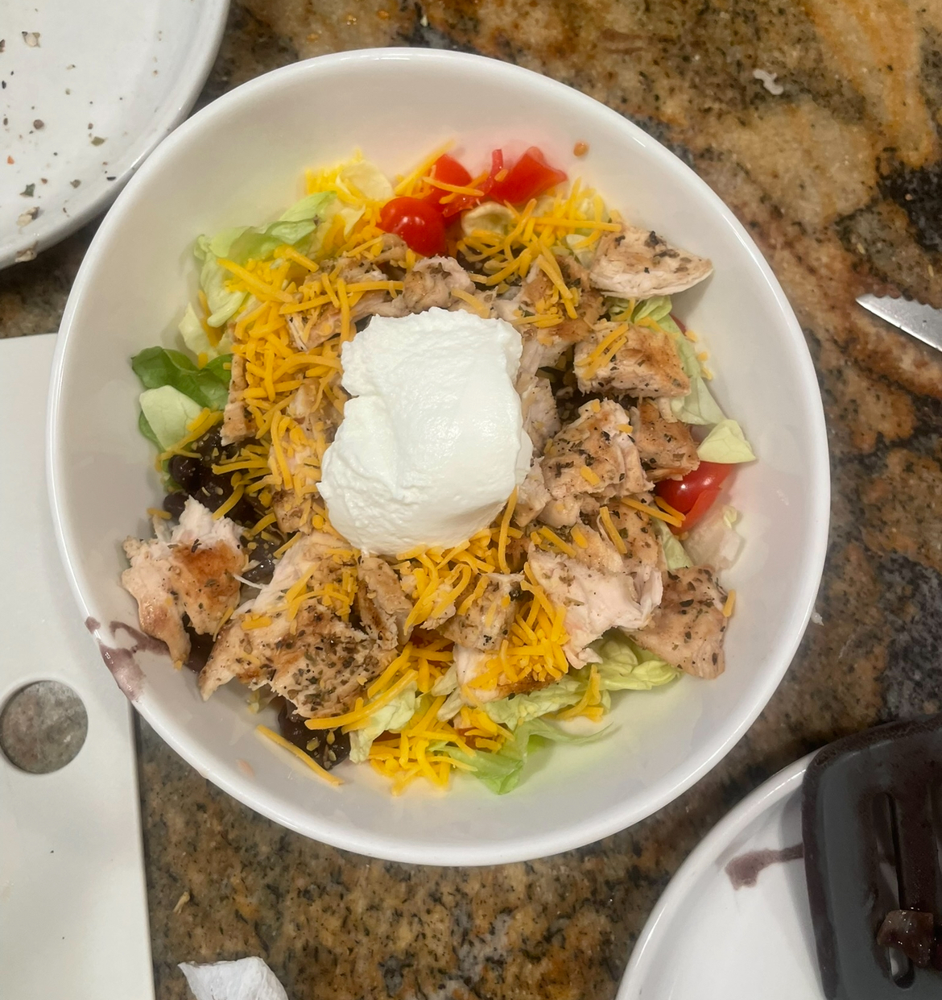
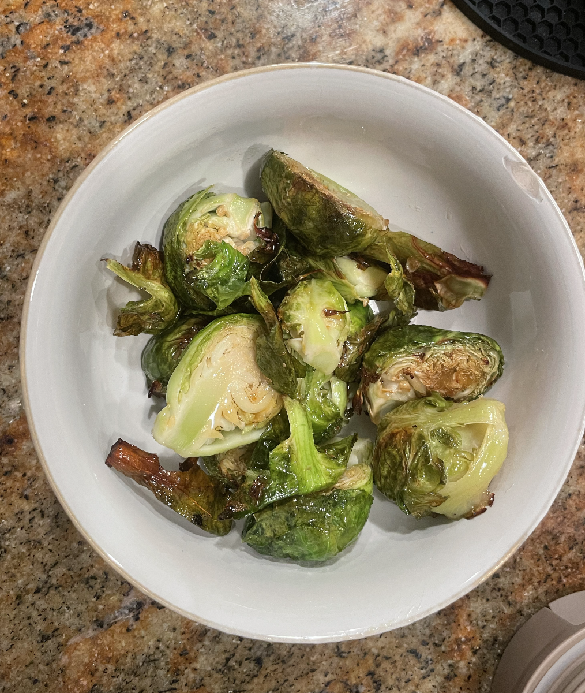
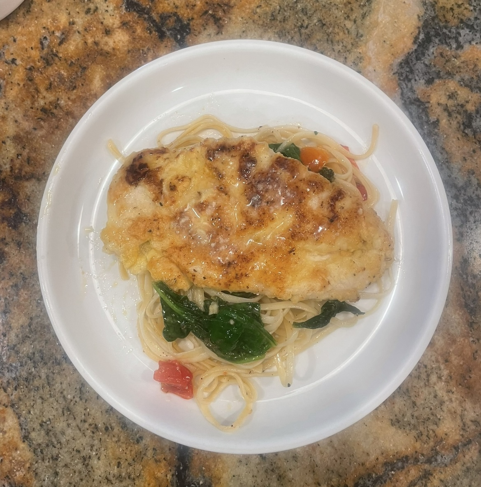
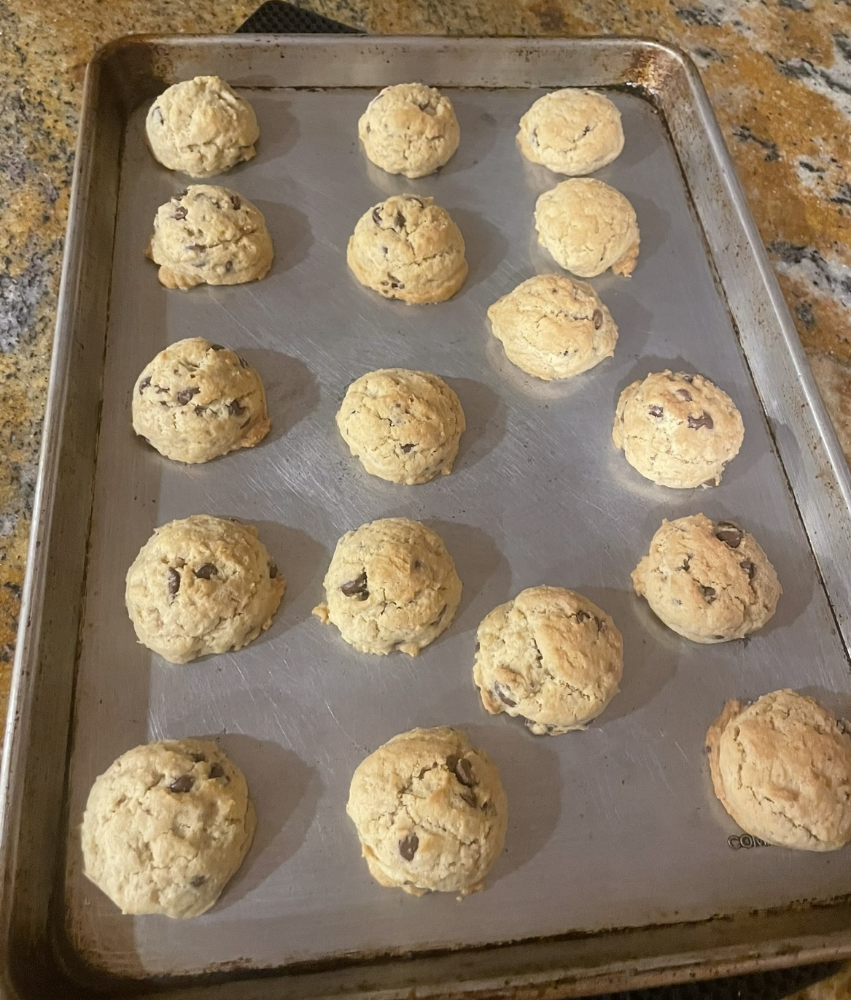
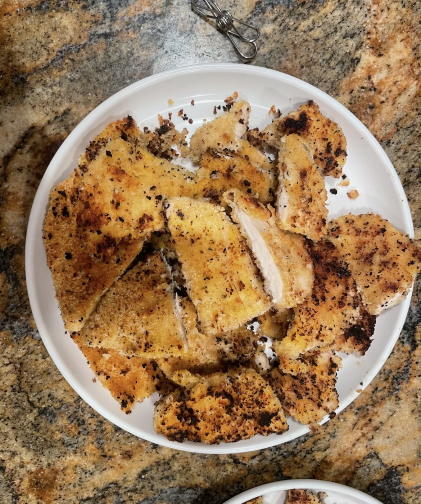
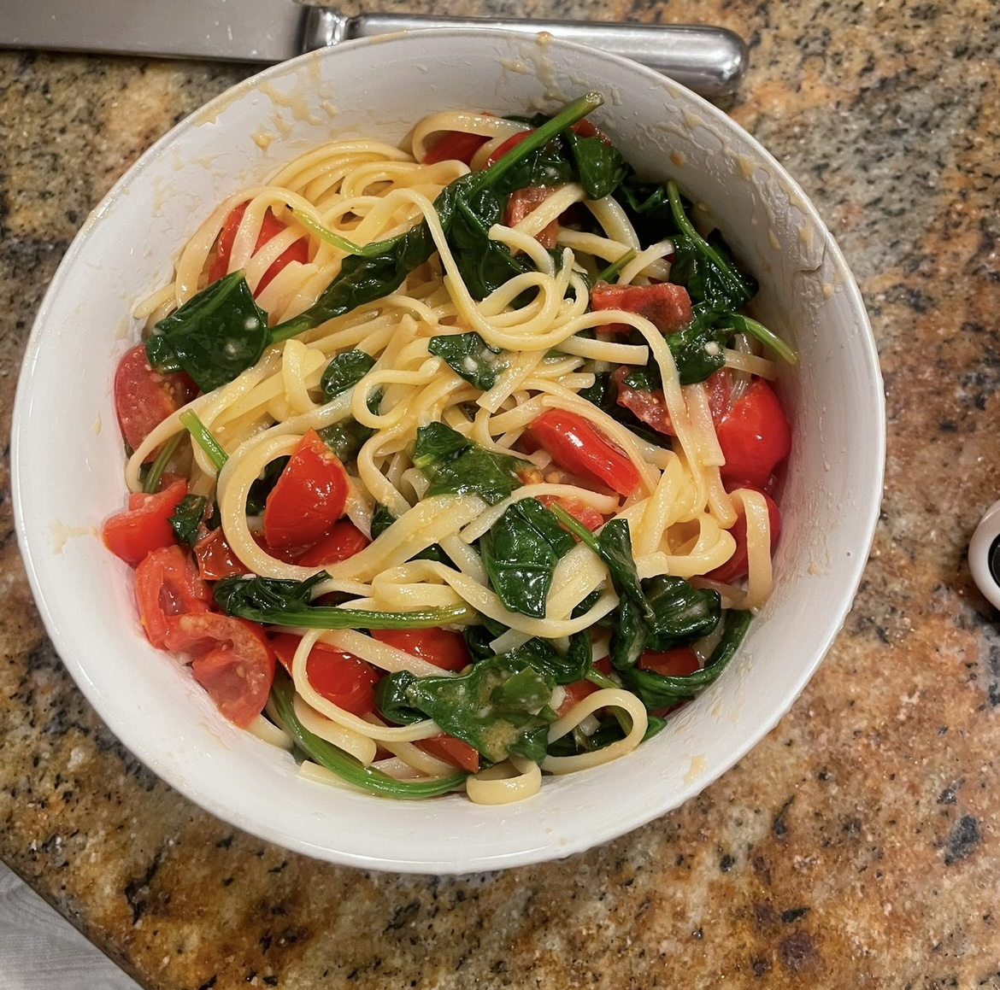

When I started lifting, I had no idea how important nutrition really was. I snacked without intention, mostly sugar, processed food, and barely any protein. I thought training alone would be enough. I was not correct. I used to eat burgers and meat most days without thinking about what my body actually needed. Within the last year I completely changed my diet. I focus a lot more on plant protein now and I feel so much better. For the past six months, I’ve been eating things like chickpeas, edamame, lentils, tofu, and protein pasta. My energy has changed, my digestion has improved, and I feel way more in control of how I fuel myself.
🥣 Learning to Meal Prep Bulking Meals
Eventually, I learned to prep. Chicken, rice, oats, and eggs became my go-to ingredients. I started tracking macros, using measuring cups, and cooking on Sundays. It became less of a chore and more of a commitment to myself. At first it felt overwhelming, but once I figured out what worked for me, it got easier. I realized that prepping helped me stay consistent during the week, especially when I was busy. I didn’t have to guess what to eat or reach for junk. I also started experimenting with high-protein recipes and better plant-based options. Now I actually enjoy it. Meal prep gives me structure and helps me feel in control.

chicken,brown rice,beans,lettuce, greek yougrt and chedar cheese

Roasted Brussels sprouts with olive oil and butter

Chicken with pasta, lemon, garlic, tomatoes & spainach

Is it okay to have cheat meals. These are my healthy go to cookies with less butter and sugar thna your average cookie. I also feel better eating cookies I made that are less proccessed.

I love making these high protein breaded, panko chicken

I love making pasta healthier with spinach and tomatoes and garlic
🥗 Where I Am Now
Today my meals are high-protein, clean, and consistent. I fuel with carbs before workouts and recover with whole foods after. I’ve learned to see food as fuel — not punishment or reward — and that mindset changed everything.